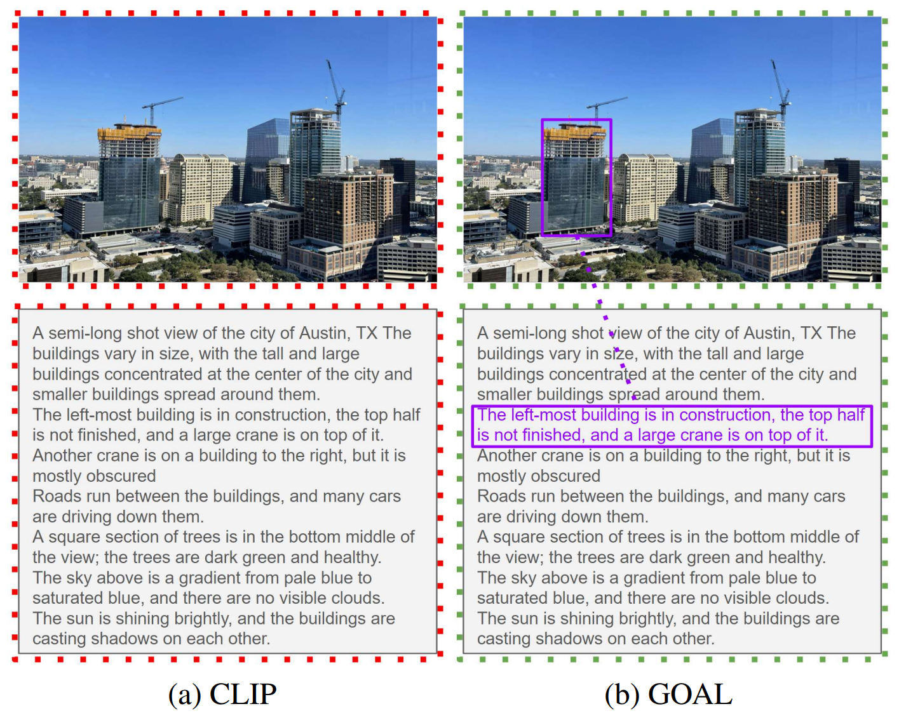
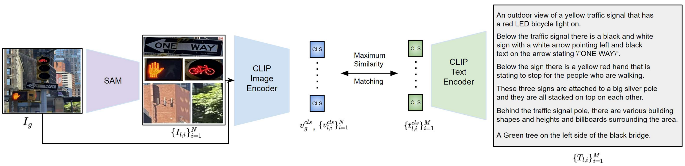
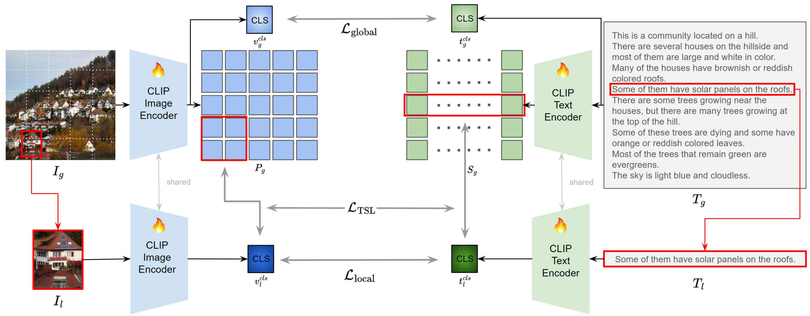
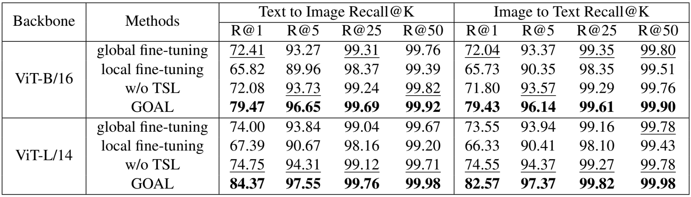

We present a joint learning scheme of video super-resolution and deblurring, called VSRDB, to restore clean high-resolution (HR) videos from blurry low-resolution (LR) ones. This joint restoration problem has drawn much less attention compared to single restoration problems.
We propose a novel flow-guided dynamic filtering (FGDF) and iterative feature refinement with multi-attention (FRMA), which constitutes our VSRDB framework, denoted as FMA-Net. Specifically, our proposed FGDF enables precise estimation of both spatio-temporally-variant degradation and restoration kernels that are aware of motion trajectories through sophisticated motion representation learning. Compared to conventional dynamic filtering, the FGDF enables the FMA-Net to effectively handle large motions into the VSRDB.
Additionally, the stacked FRMA blocks trained with our novel temporal anchor (TA) loss, which temporally anchors and sharpens features, refine features in a course-to-fine manner through iterative updates. Extensive experiments demonstrate the superiority of the proposed FMA-Net over state-of-the-art methods in terms of both quantitative and qualitative quality.